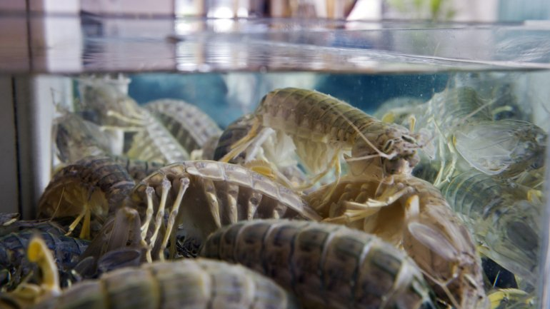

Fatos sobre o Stomatopoda
Informações gerais
Nome científico: Odontodactylus scyllarus
| Reino | Animalia |
| Filo | Arthropoda |
| Subfilo | Crustacea |
| Classe | Malacostraca |
| Subclasse | Hoplocarida |
| Ordem | Stomatopoda; Latreille, 1817 |

Curiosidade
Um golpe de uma garra de camarão mantis é tão forte que pode quebrar o vidro do aquário.
